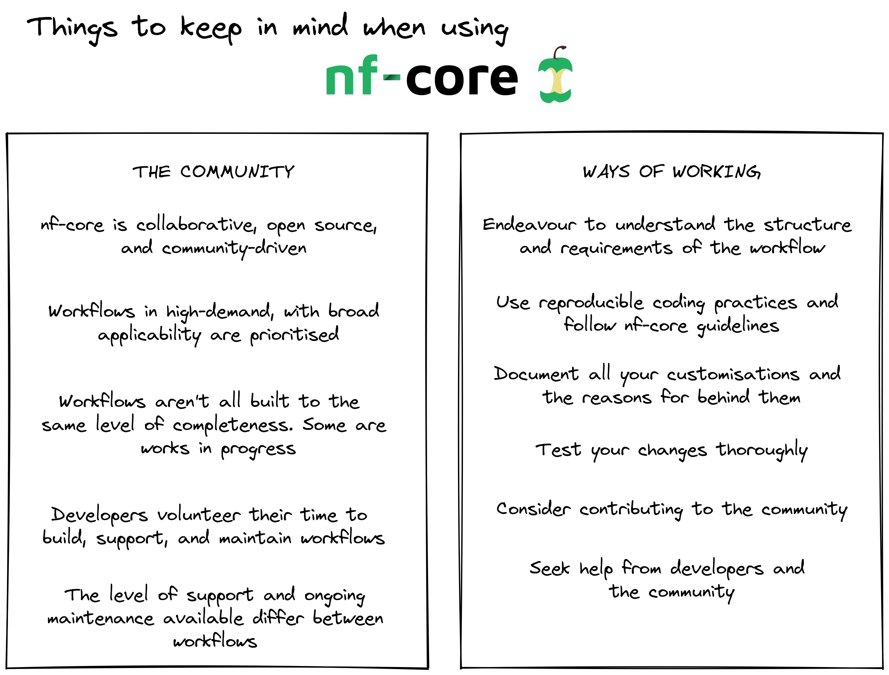

Welcome to session 2
In this session we will be writing, running, adjusting, and re-running the nf-core/rnaseq workflow as we step through various customisation scenarios. This session builds on fundamental concepts learned in Session 1 and provides you with hands-on experience in workflow customisation. Throughout the session we will be working with a case study to apply an nf-core workflow to process data for this experiment. Each lesson will build on the previous one, so you can gain a deeper understanding of the ccustomisation techniques and the impact they have on the workflow and your results. We will be exploring source code of the nf-core/rnaseq workflow and apply customisations using:
- A parameter file
- Custom configuration files
- An institutional configuration file
You will be writing these files using Nextflow and YAML languages and also running some custom Bash code to efficiently extract information from the source code 🤓.
While all activities in this session will be performed using the nf-core/rnaseq workflow, all customisation scenarios we explore are applicable to other nf-core workflows and do not require an understanding of RNAseq data processing.
How to approach open source software communities
As with all open source bioinformatics resources, nf-core workflows may not suit all applications. It is important that you understand the needs of your dataset and research questions before deciding on a workflow. nf-core is a community effort powered by life scientists and software developers, who volunteer their time to build, maintain, and support workflows. All nf-core workflows are provided with sensible default settings that have broad applicability and comprensive documentation that explains all available parameters. What is ‘sensible’ varies dramatically between different experiments, computing environments, and datasets, so these settings might not suit your needs. We recommend approaching the application and customisation of nf-core workflows with the following framework:
DIAGRAM OF NF-CORE COMMUNITY FEATURE - IMPLICATION FOR WORKFLOWS - Q TO ASK - OUR RECOMMENDATIONS

Log in to your instance
In Visual Studio Code
Same as yesterday, connect to your instance using the command palatte:
Ctrl+Shift+Pto open command palette- Select
Remote-SSH: Connect to Hostand select name of your host - Select
Linuxfrom dropdown menu and thencontinue
Having successfully logged in, you should see a small green box in the bottom left corner of your screen:

In a terminal
With a terminal application, run the following on the command-line: default ssh training@###.###.###.### Enter the password provided at the beginning of the workshop. Ask one of the demonstrators if you’ve forgotten it.
Enter password:Having successfully logged in, your terminal should then display something like that shown in the figure below:

- nf-core workflows are provided with sensible defaults. These may not always suit your needs.
- To decide whether an nf-core workflow is the right choice for your experiment you need to understand the needs of your dataset and research questions.
- Use the workflow documentation to understand the requirements for running a workflow.
All materials copyright Sydney Informatics Hub, University of Sydney